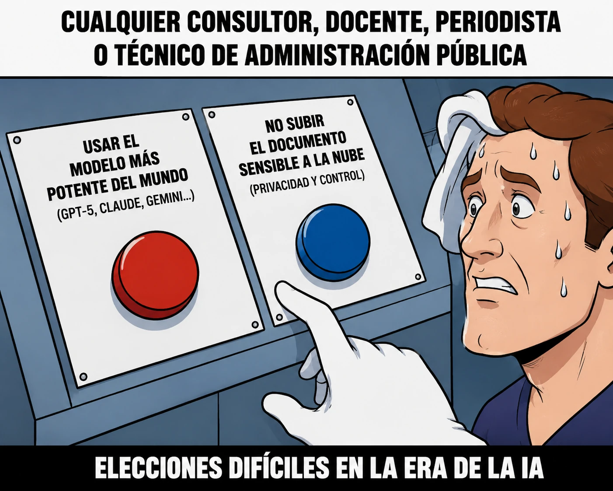

estrategIA #141 ·
Potencia o control de los documentos
El contexto
El dilema aparece al trabajar con documentos sensibles: usar una IA muy potente en servidores de otra empresa o mantener los archivos en el propio ordenador. La edición probaba modelos que pueden ejecutarse localmente. Los botones muestran que la capacidad de la herramienta y el control de los datos no siempre van juntos.
Publicado en: estrategIA #141 — La IA local ya empieza a merecer un hueco en su ordenador
Leer el texto de la imagen
CUALQUIER CONSULTOR, DOCENTE, PERIODISTA O TÉCNICO DE ADMINISTRACIÓN PÚBLICA USAR EL MODELO MÁS POTENTE DEL MUNDO (GPT-5, CLAUDE, GEMINI...) NO SUBIR EL DOCUMENTO SENSIBLE A LA NUBE (PRIVACIDAD Y CONTROL) ELECCIONES DIFÍCILES EN LA ERA DE LA IA